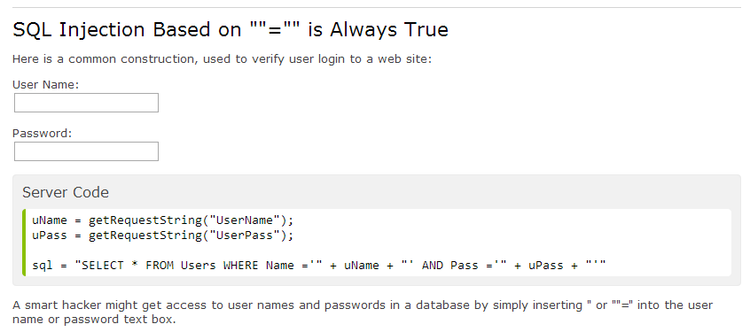

Issues with SQL
SQL Injection
Well! This is something really nasty that I knew nothing about. Just as well my databases don't exist on the web. It turns out that if your database application gets user input from a web form and you haven't taken precautions, then a user with malicious intent, can insert some clever data into that form and do drastic things to your underlying database.
A malicious user might insert (or inject!) data into your form to extract or delete data causing catastrophic damage. The examples given in w3schools.com include the extraction of username and password information
Why is this a problem!
Isn't that obvious!